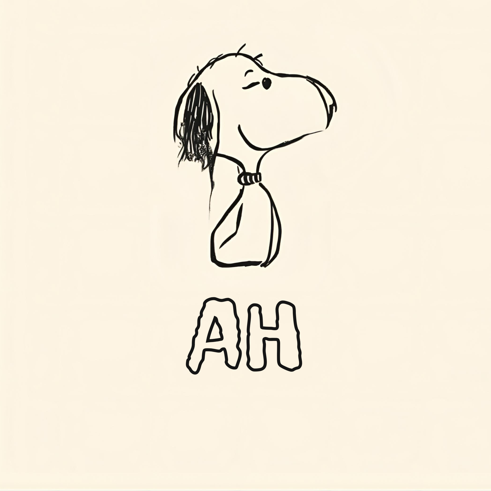

Full-stack engineer & CS student with experience developing intuitive and impactful software solutions, and an advocate for learning that never ends.
Reach out! :)Some technologies I've worked with
I'm a Computer Science student at Queens College CUNY (graduating May 2026). From helping others out with technical challenges to building intuitive software solutions, I love making an impact wherever I go, through software or connections.
When I'm not writing code, I like to bake, explore NYC, or binge a show (currently obsessed with The Pitt).

Where I've Worked
Recieved an offer to return as a lead engineer, serving as a mentor for a SWE intern team through code reviews, resolving technical blockers, and weekly standups to drive production in feature development. I also work on independent projects to fix bugs in the app and continue progress on the native real-time chat system.
Learned and applied full-stack knowledge in .NET MAUI and C# by leading a group of 3 interns on planning and designing an end-to-end Episode reaction feature for a prominent podcast and radio show app (DNR Cast) using .NET MAUI and ASP.NET Core, building the REST API, dual SQLite + MySQL architecture, and worked on another feature to introduce native user profiles by modifying existing EF Core database schemas.
Built and deployed into production an AI-powered fraud detection system for BRL's Design Insight Group (DIG) app using Airtable + GPT-4o mini agents that accurately flagged 700+ fraudulent accounts and prevented ~$42K in fraudulent payouts, reaching 97% accuracy and cutting manual review time by 80%+ through iterative feedback loops and Zapier workflow debugging.
Things I've Built
Analyzed 1,000+ NYC 311 noise complaints to identify recurring patterns in location, time of day, and complaint type. Designed a data dashboard revealing Brooklyn accounted for 40% of complaints, with residential issues peaking during evening hours.
View on GitHub →Built a multithreaded Java web crawler crawling up to 20 pages in parallel using a thread pool and concurrent hash maps. Features a servlet backend returning enriched image metadata and a polished frontend with lightbox viewer and client-side filtering.
View on GitHub →Progressive Web App (PWA) shopping list built with HTML, CSS, JavaScript, and Firebase Realtime Database, allowing users to add, display, and delete items in real-time while making the app feel like a native mobile experience.
View on GitHub →Ingesting and analyzing 2.4M NYC DOB building violation records via a modular Python pipeline. Cleans and transforms raw city data into a queryable DuckDB database, with a FastAPI backend exposing a weighted risk scoring algorithm and violation trend analysis by borough and building.
Not Yet on GitHubWhat I Know